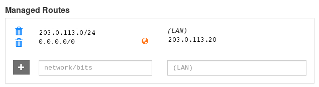

最近用Linux Deploy在旧安卓手机上配置了一个服务器，但是由于家里的网络没有公网ip，在外面无法连接到这个服务器上。同时，公司里的电脑也是只有内网ip，在家里也无法直接远程连接，所以稍微折腾了一下。
问题描述
需要下记的多台局域网内（即没有公网ip）的多台设备的能够互相访问。
- 网络情况：
- L1（家庭内网）
- L1-D1（安卓服务器，Ubuntu 16.04）
- L1-D2（电脑，macOS High Sierra）
- L1-D3（电脑，Windows 10）
- L2（公司内网）
- L2-D1（电脑，Ubuntu 18.04）
- L2-D2（电脑，Windows 10）
- L3（移动网络）
- L3-D1(手机，Android 8.0)
- L3-D2(手机，iOS 11)
- …
- L1（家庭内网）
可见基本上囊括了常见的设备以及系统类型。（不列出来真不知道自己竟然有这么多设备）
网上搜索了一下，有不少解决方案，但最终选定Zerotier，主要是因为其跨平台，易于配置，免费（100台设备以下免费，个人绝对够用）等特点。实际部署的时候虽然有点小坑（主要是安卓服务器上），但是确实特别容易就在所有的设备上都配置成功，并且测试通过所需功能。
配置Zerotier
关于Zerotier的原理，这个网上的介绍比较多，这里就不多说了。
在设备上配置的大概步骤如下：
- 注册Zerotier账户并登陆
- 在
Networks里新建一个网络，记下Network ID 按照官网上的指示在各设备配置
- 手机：在App Store或者Google Play Store上下载
ZeroTier One安装 电脑：安装完后如下显示便是安装成功
1
*** Success! You are ZeroTier address [ 916af8664d ].
然后加入第2步建立的网络
1
sudo zerotier-cli join NetworkID
- 手机：在App Store或者Google Play Store上下载
回到官网，进入第2步建立的网络里，在你的设备列表的
Auth上打钩授权，设备就完成加入Zerotier网络了
配置完成后，可以用不同设备互相ping一下各自的Zerotier IP，确认连接已经建立。
然后，各个设备就相当于在同一个Zerotier局域网内，想怎么操作都可以了。
实现VPN
这也是一个比较重要的功能，有一些授权的网站是识别公司的ip来进行访问的，那么在家的时候就无法查看这些网站了，但是通过Zerotier可以很简单的实现VPN功能。
- 在公司的电脑（L2-D1）上设置ip转发。打开
/etc/sysctl.conf添加net.ipv4.ip_forward = 1，
并运行sudo sysctl -p来激活 运行下列指令实现NAT和ip伪装
1
2
3sudo iptables -t nat -A POSTROUTING -o eth0 -j MASQUERADE
sudo iptables -A FORWARD -m conntrack --ctstate RELATED,ESTABLISHED -j ACCEPT
sudo iptables -A FORWARD -i zt0 -o eth0 -j ACCEPT其中
etho和zt0是上网卡和Zerotier网卡名字，可通过ifconfig查看- 回到官网，进入之前建立的网络，在
Managed Routes添加路由规则，大概长下面这个样子，有个橘色的地球图标表示ip转发成功

成功后，其他网络（L1，L3）的设备就可以通过L2网络上网了。也可以利用checkmyip等网络工具来确认VPN是否连接成功。
更加具体的教程可以参照这个。
安卓服务器配置Zerotier
由于Linux Deploy安装的系统其实是实现了个chroot()，无法直接调用systemd命令，在安装过程中会直接ignore一些配置，导致安装Zerotier不完全，所以要稍微修改一下安装脚本，并手动安装配置文件。
更新配置第3步如下，
如果之前按照官网指示（原第3步）已经安装过Zerotier的话，需要先卸载
1
sudo apt-get remove zerotier-one
下载安装脚本并保存到本地
1
curl -s https://install.zerotier.com/ -o zerotier_setup.sh
安装
servicectl来替换脚本中的systemctl修改
1
2
3if [ -e /usr/bin/systemctl -o -e /usr/sbin/systemctl -o -e /sbin/systemctl -o -e /bin/systemctl ]; then
$SUDO systemctl enable zerotier-one
$SUDO systemctl start zerotier-one为
1
2
3if [ -e /usr/local/bin/servicectl]; then
$SUDO bash servicectl enable zerotier-one # need to enforce bash for executing servicectl
$SUDO bash servicectl start zerotier-one下载zerotier-one安装文件并解压
1
2wget https://download.zerotier.com/RELEASES/1.2.12/dist/debian/xenial/pool/main/z/zerotier-one/zerotier-one_1.2.12_armhf.deb
dpkg -x zerotier-one_1.2.12_armhf.deb ./zerotier-one复制配置文件到系统文件夹
1
2sudo cp -r zerotier-one/etc /
sudo cp -r zerotier-one/lib /var运行脚本
sudo bash zerotier_setup.sh- 如果没有报错，应该会生成一个Zerotier地址，然后直接加入配置第2步的网络就可以了
1
sudo zerotier-cli join NetworkID
*[NAT]: Network-Address-Translation